Départ France ➔ Japon
Dimanche 05/04/202611h00 : TGV Inoui (1ère classe) depuis Lyon Part-Dieu.
13h02 : Arrivée Gare Aéroport Paris Charles De Gaulle Terminal 2.
20h25 : Décollage Vol Japan Airlines JL46 (Vol direct - 13h55).
Kevin, Loïc, May Nhia, Stéphanie, Estelle
Du 5 Avril au 27 Avril 2026
11h00 : TGV Inoui (1ère classe) depuis Lyon Part-Dieu.
13h02 : Arrivée Gare Aéroport Paris Charles De Gaulle Terminal 2.
20h25 : Décollage Vol Japan Airlines JL46 (Vol direct - 13h55).
17h20 : Atterrissage à Haneda (Terminal 3).
21h30 : Prendre le Bus Limousine > Direction l'hôtel APA Hotel & Resort Tokyo Bay Makuhari.
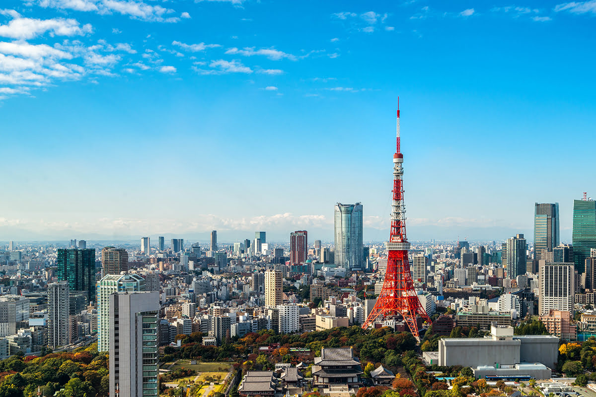
10h00 : Récupération de la voiture de location par Kevin et Loïc.
~10h50 : Promenade libre et repas le soir selon la fatigue.
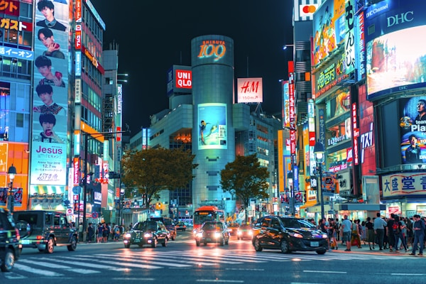
En voiture (5 personnes) : Visite du Shibuya Crossing.
18h00 : Dîner réservé au Seafood Buffet Dining Ginza Hachiyoshi.
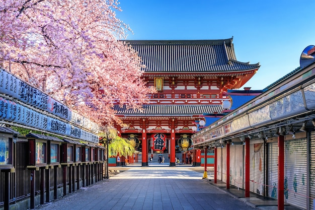
Jeudi 09/04/2026
Asakusa, Temple Senso-ji, Ueno, Skytree.
Vendredi 10/04/2026
Ashikaga Flower Park (ou alternative selon floraison).
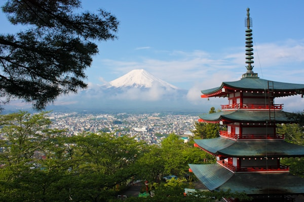
~7h00 : Départ tôt avant les heures de pointe pour éviter les bouchons le matin.
Visite des meilleurs spots autour du Mont Fuji.
Retour tard le soir (vers minuit si besoin) pour une route fluide.
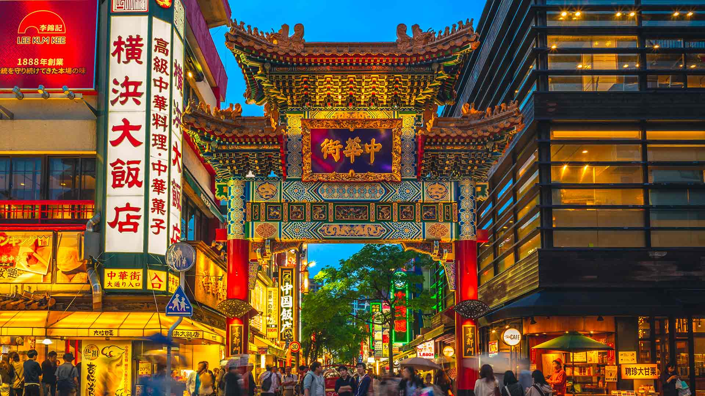
~9h30 : Matinée à Chinatown (Kanagawa).
⚠️ Rentrer avant 19h00 : Rendre la voiture chez Toyota Rent a Car !
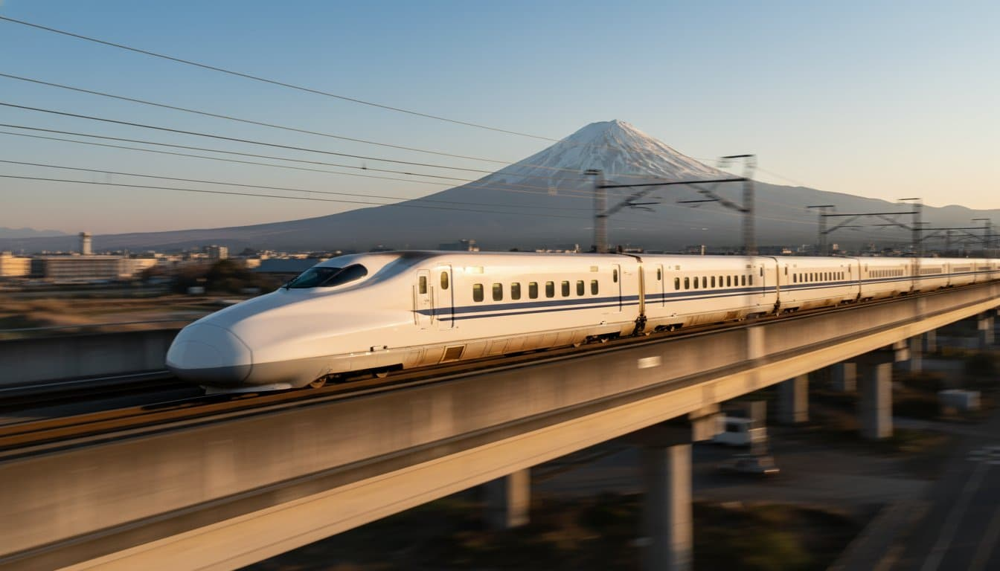
~8h30 : Marcher à la station Gare de Kaihimmakuhari.
(13 minutes - 800 mètres)
09h00 : Prendre la ligne Keiyō (Ligne Rouge) > Direction Gare de Tokyo.
~12h00 : Shinkansen Tokyo vers Osaka Shin Station.
(2h30 de trajet)
~15h00 : Check-in : APA Hotel Osaka Shin Ekimae.
~16h00 : Récupération de la nouvelle voiture de location par les garçons.
Soirée : Visite de Dotonbori et repas locauste.
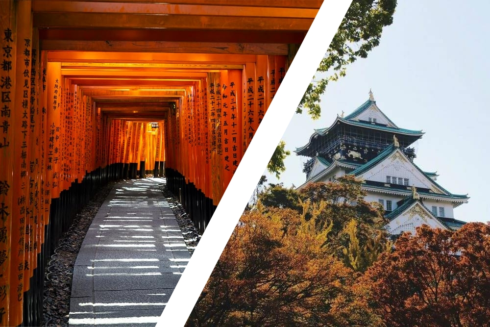
Mardi 14/04/2026
Kyoto : Fushimi Inari + Temple Kiyomizu-dera + ruelle Sannenzaka.
Mercredi 15/04/2026
Osaka : Chateau Osaka + Dotonbori + Shinsekai Market + Don Quijote + Umeda Sky Building.
Jeudi 16/04/2026
Kyoto : Nishiki marché culinaire Kyoto + Tofukuji + Gion + temple Kinkaku-ji.
Vendredi 17/04/2026
Osaka : Marché Kuromon Ichiba + Salon Solaniwa (massage, bain thermal).

05h00 : Transfert Minibus Booking.com depuis l'hôtel vers l'Aéroport Itami.
08h15 : Vol ANA NH761 ➔ Arrivée Okinawa (10h25).
10h00 : Récupération voiture grand format (Kanucha).
Trajet vers la Villa à Onna, puis courses au San-A Ishikawa City.
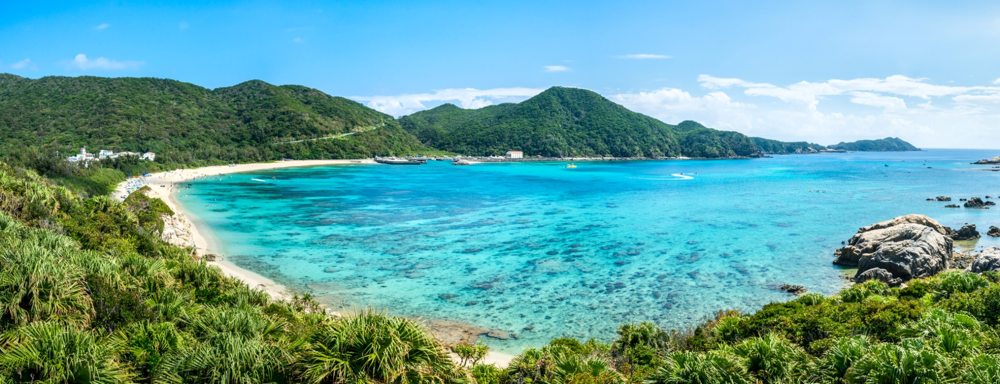
Dimanche 19/04/2026
Manzamo Area Revitalization.
Lundi 20/04/2026
Churaumi Aquarium Event Hall.
Mardi 21/04/2026
Visite de Naha Capitale.
Mercredi 22/04/2026
Southeast Botanical Gardens.
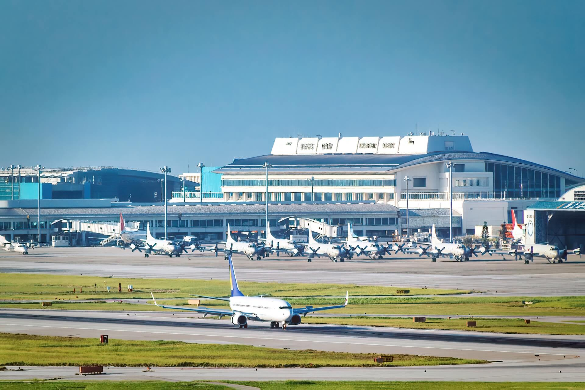
07h00 : Départ de la villa. Rendre la voiture à l'agence de location voiture Kanucha avant 10h00.
⚠️ Avant 10h00 : Déposer tout le monde à l'aéroport puis rendre la voiture situé à 10 minutes à pied de l'aeroport. (800 mètres)
15h10 : Vol retour ANA NH470 vers Tokyo Haneda (Arrivée 17h35).
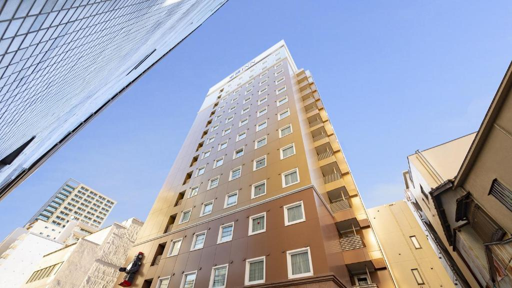
Trajet en métro depuis Haneda vers l'hôtel Toyoko Inn Tokyo Asakusa Kuramae No.2.
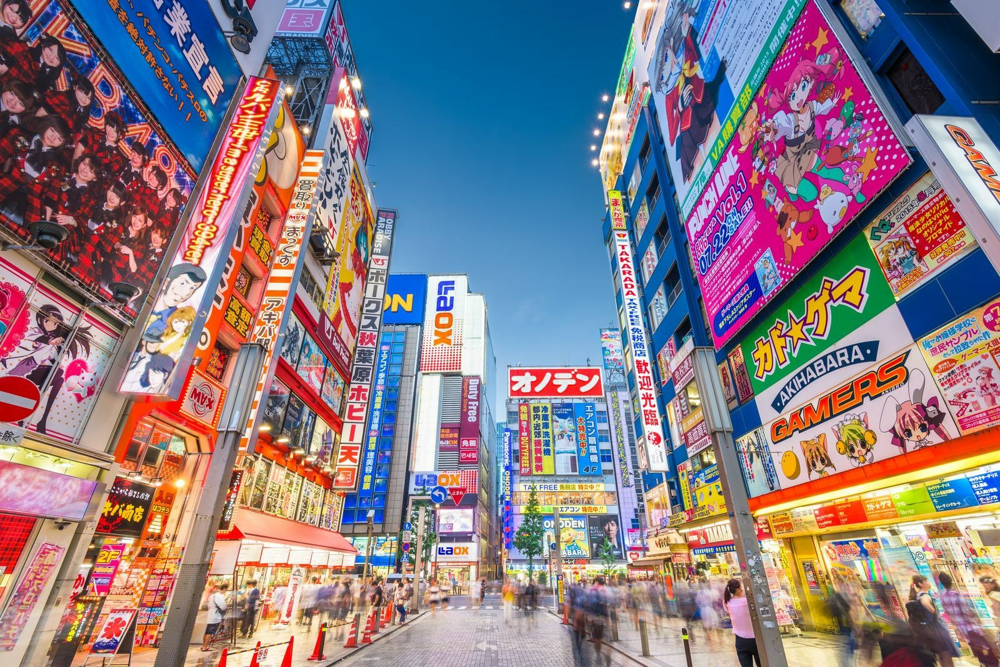
Vendredi 24/04/2026
9h00 : Location Voiture Toyota Prius à Asakusabashi.
10h00 : Shopping à Akihabara + Odaiba + Meiji Jingu + Achat de valises.
Samedi 25/04/2026
9h30 : Shopping Shinjuku Godzilla Head + Shinjuku Gyoen + Derniers achats souvenirs.
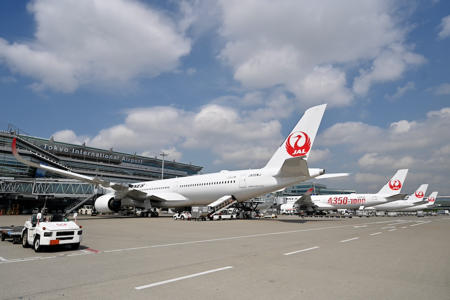
05h30 : Départ de l'hôtel avec 2 Grands Monospaces réservés.
Rendre les pocket WiFi à Haneda.
10h20 : Vol JAL45 ➔ Arrivée Paris CDG (17h55).
21h00 : Navette vers l'hôtel Première Classe Roissy.
09h15 : Navette depuis l'hôtel vers l'aéroport CDG.
11h50 : TGV Inoui 1ère classe depuis Gare CDG 2.
14h00 : Arrivée à Lyon Part-Dieu. Fin du Voyage ! 🎉